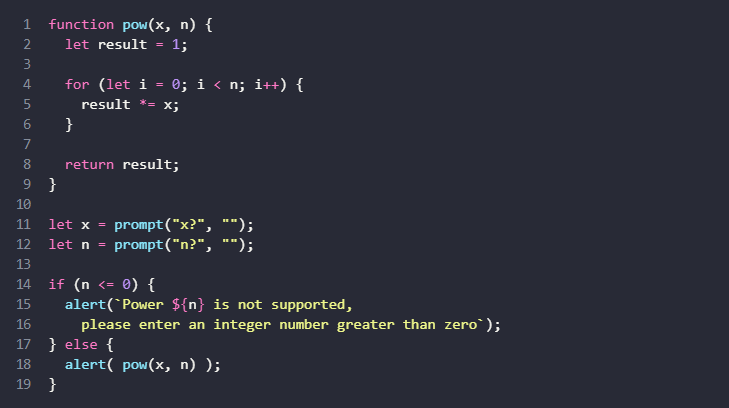

This concept introduces a tool developers can use to debug their
scripts. Firstly, Debugging is the process of finding and
fixing errors within a script, this script debugging tool are widely
supported by modern browsers, thers's a special UI in developer tools
that makes debugging much easier. This tool is found in the
Sources panel. In the reading we were introduced to a
"Breakpoint" A breakpoint is a point of code where the
debugger will automatically pause the JavaScriot execution, at that
point we can examine current variables, in general we can debug it.
There are also conditional breakpoints, and it is useful when we need to
stop only for a certain function parameters. We can also pause a code in
the developers tool using the debuggger command. The debugger
command only works when the dev tool is open. Other important things to
know is the environments we will use to examiine our codes, they
includes:
There also some other key symbols or hotkey we can use to trace executions in our codes, ranging from:
With this available tools one can debug his/her code using the browser.
To make our code clean and more readable as possible developers need to apply the general coding style. there is a general syntax for that. The following rules should be applied to help make our code readable, and clean.
The below code image clearly implements the coding style listed above
As developers we sometimes have errors in our script, this causes our code to break down, But there's a syntax construct try...catch that allows us to "catch" errors so the script can, instead of dying, do something more reasonable. in the try { ... block the code is run in that section, the catch (err) {... helps in the case of errors and finally { ... is used in any case after try or catch sometimes there may be no catch section or no finally, so shorter constructs try...catch and try...finally are also valid. The Error objects have the following properties:
Sometimes an error object is not needed, we omit it by using
catch { instead of catch (err) {.
We can also generate our own errors using the throw operator.
There is a global error handler that catches errrors that fall out. In
browser it is called window.oneerror. It's one of the easiest
ways to log client-side errors and report them to your servers.